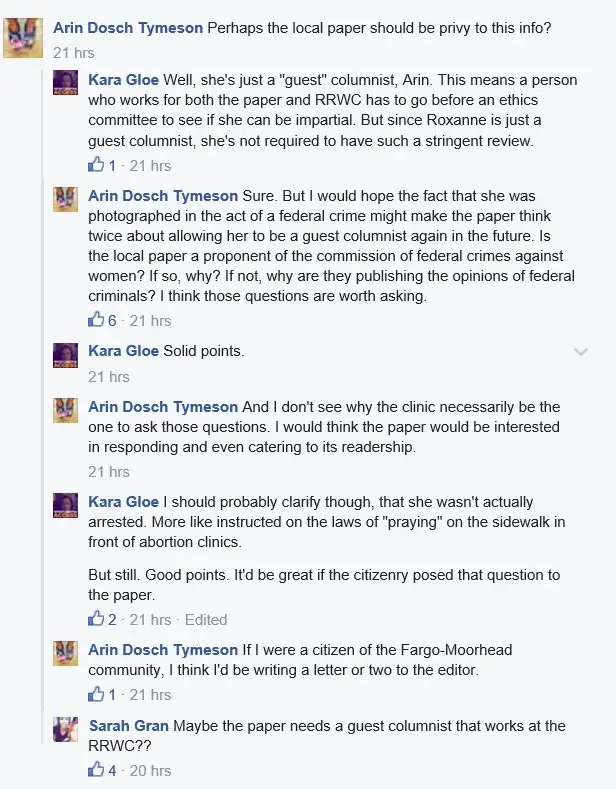

Oh boy. Well, I’m going to tell it as plainly as possible, including the facts as others have purported them, and also as I experienced them. Because this has gotten a little wild.
Let me start at the end as it was Thursday afternoon. A screenshot was posted on Facebook sometime Wednesday I assume, and set to “public.”
As you just saw, there are two women in the photo — one in a skirt, one in a hat — and a police officer. One woman is me; the other is not. Those who know me know I’m the woman on the right.
Here’s where things get wonky. In the thread below the post, one person verbally indicts me as a criminal, guilty of a federal crime. As I shared some of the details of this with my boys over lunch yesterday, they looked at me in disbelief. For one, they were there. For two, they know me pretty well. For three, huh? See it below for yourself.

To be fair, note the clarification within the post that backs off a bit from making me an all-out criminal. In essence, well, it’s not REALLY like that. I mean she’s a monster but…
So that was the perception, based on a fuzzy assumption. Here’s what I in fact experienced that day.
Toward the end of my time on sidewalk Wednesday late morning, the police showed up. It wasn’t long after that we had to leave because three boys I know well were eyeing me and giving me gestures indicating our time there had ended. Our plans for a pizza lunch hovering, their growling stomachs demanded a change in location.
But first, the police. There were two, and they got out of their cars and began moving in my general direction. But it soon became clear I was not their target. Another women near me was of interest. I talked briefly with the police during that time. I initiated it. It’s something a friend modeled for me and I’ve never forgotten it. Always take time to thank those who serve.
“Thank you for your service,” I said. “We appreciate all that you do to protect us.”
“You’re welcome,” the officer said in turn, and then began asking the woman in the skirt some questions.
This is the moment captured on camera, I assume by the Red River Women’s Clinic where we’d gathered to pray. On Wednesday, I shared about another moment right before that point.
For those who have accused me in the last 24 hours of doing other things besides praying out there on the sidewalk, I need to qualify a few things myself. I have written several posts sharing the rest of what we do and how we try to reach the women in other ways besides our prayers. When we see women coming toward the facility, we try to share literature if there’s a chance (see Wednesday’s post) to make sure they have all the information for such a big decision at their disposal. Often it is hard to get near them, but we try. We know that women have turned back before. We know many won’t, but we are there to offer that one last chance to choose life. We know these women need help and we know where the resources are. We know they need love and support and we’d love to guide them toward that. Our post-abortive friends have encouraged us to be that witness they wish they’d have had.
So yes, we do try to talk to the women when we can. There are times things are said that we wish would not have been said. We cannot control every utterance from either side. Mistakes are made by each; we are all human. But by and large, those who come faithfully to pray (and talk to the women or men when possible) have good intentions and don’t want to make things worse for the women.
That’s what I was doing that day, in between those decades of Rosary. And I was actually glad to see the officers. If anything, it makes us feel safer, too, knowing they are there, and respond. There are times I’ve felt we’ve needed that protection as well. And I don’t mind when they remind us of the law. It’s good to keep all of that in mind when things get tense. We are not trying to break the law. We are just trying to save lives if possible.
I think what happened here is that I was assumed by some to be the woman in the skirt. So the story went in that direction, with some of the escorts and others remarking that the police had scolded me for my behavior, when that didn’t happen at all. If it did happen, I wasn’t there. I was eating pizza with my sons when this pretend encounter took place.
Anyway, that’s the scoop! Thanks for all of your prayers, and I’d love to pray for any concerns you have. We’re all in this together..
[UPDATE: Not long after I wrote and scheduled this post, the public post that had been shared, and which was the focus of this one, was removed from public view. However, I’d already taken screenshots in order to create this post, so evidence of the misinformation remains for readers to ponder.]
Q4U: What is your prayer concern or private intention? I’d love to help carry it to God with you.